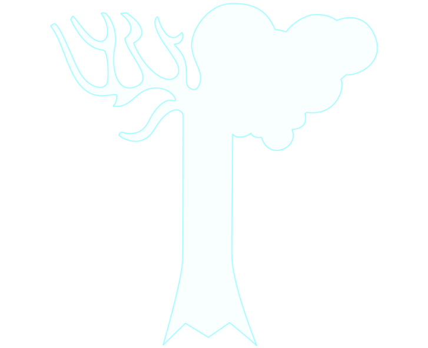
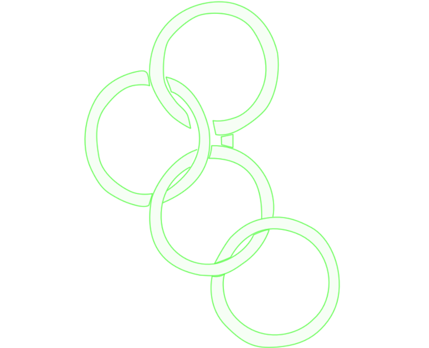
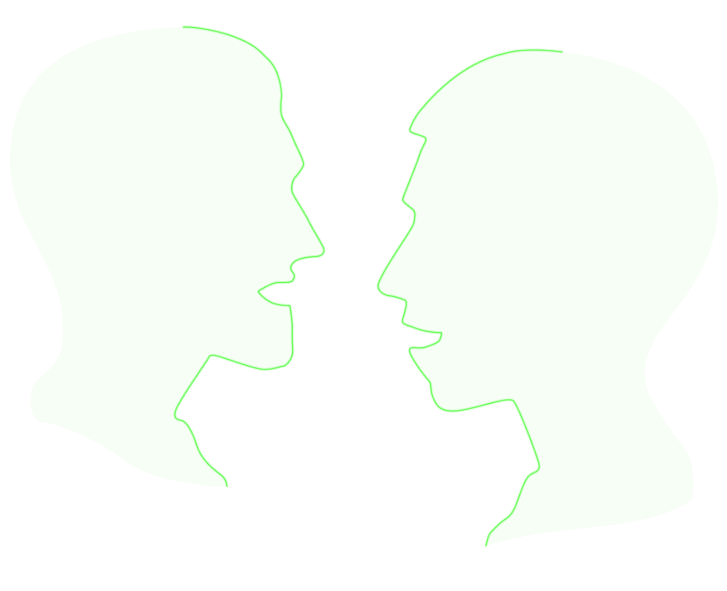

Guilds of Skyrim

The School of Alteration involves the manipulation of the physical world and its natural properties. This skill makes it
easier to cast spells like Waterbreathing, magical protection, and Paralysis
The School of Conjuration governs raising the dead or summoning creations from Oblivion.
This skill makes it easier to cast these spells as well as Soul Trap and bindings.
The School of Destruction involves the [sic] harnessing the energies of fire, frost and shock. This skill makes it
easier to cast spells like Fireball, Ice Spike, and Lightning Bolt.
The School of Restoration involves control over life forces. This skill makes it easier to cast spells like Healing,
Turn Undead, and magical Wards.
The School of Illusion involves manipulating the mind of the enemy. This skill makes it easier to cast spells like Fear,
Calm, and Invisibility.
The more powerful the enchanter, the stronger the magic he can bind to his weapons and armor.
The art of blocking an enemy's blows with a shield or weapon. Blocking reduces the damage and staggering from physical
attacks.
An archer is trained in the use of bows and arrows. The greater the skill, the deadlier the shot.
The art of combat using one-handed weapons such as daggers, swords, maces, and war axes. Those trained in this skill
deliver deadlier blows.
The art of combat using two-handed weapons, such as greatswords, battle axes, and warhammers. Those trained in this
skill deliver deadlier blows.
Those trained to use Heavy Armor make more efficient use of Iron, Steel, Dwarven, Orcish, Ebony, and Daedric armors.
The art of creating weapons and armor from raw materials, or improving non-magical weapons and armor.

Those trained to use Light Armor make more effective use of Hide, Leather, Elven, Scale and Glass armors.
The art of lockpicking is used to open locked doors and containers faster and with fewer broken lockpicks.
The stealthy art of picking an unsuspecting target's pockets. A skilled pickpocketer is less likely to be caught and is
more likely to loot valuables.
Sneaking is the art of moving unseen and unheard. Highly skilled sneaks can even hide in plain sight.

The skill of persuasion can be used to get better prices from merchants, and persuade others to do as you ask.
An alchemist can create magical potions and deadly poisons.